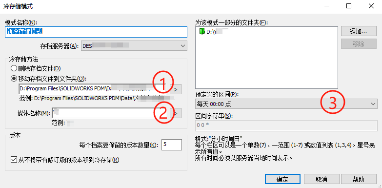

PDM冷存储模式
处理较旧的文件和版本。 您可以将这些文件移动到“库档案之外”的冷存储，也可以“删除”较旧的文件。
另外，您可以单独或同时执行这些操作。删除版本后，版本历史记载仍会保留。您不能将某个版本从冷存储复制回存档服务器。
恢复
如之前的版本已经被冷存储模式删除，获取不了旧版本查看时，可以通过以下步骤去处理。
1、在PDM库中查看文件历史记载哪个版本存档丢失，记录日期时间；
2、在数据库中根据文件ID查找Reversions表的Date和VersionUID，时间和第1步的所要时间对应上；
1 | select * from Documents where Filename = <文件名> |
3、根据文档ID去存档服务器找到对应的存档xml文件（强烈建议操作前备份index.xml文件），根据第2步查到的Date和VersionUID修改成以下这样：
1 | <version status="archived" date="2020-01-01 08:08:08" id="8"> |
4、接着就可以去PDM库里面获取对应恢复回来的版本查看文件。